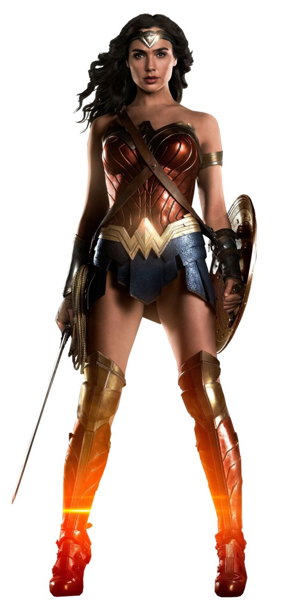

01 A estreia aconteceu em 1960
A equipe apareceu primeiro na revista The Brave and the Bold nº 28, enfrentando o vilão Starro.
Liga da Justiça
Dos quadrinhos às telas, a Liga da Justiça construiu uma história cheia de mudanças e momentos marcantes.

Arquivo histórico • DC
A equipe apareceu primeiro na revista The Brave and the Bold nº 28, enfrentando o vilão Starro.
Antes da Liga, a DC publicou a Sociedade da Justiça da América, grupo da Era de Ouro que inspirou a nova equipe.
Embora sete heróis sejam associados à formação clássica, dezenas de personagens já fizeram parte da Liga ao longo dos anos.